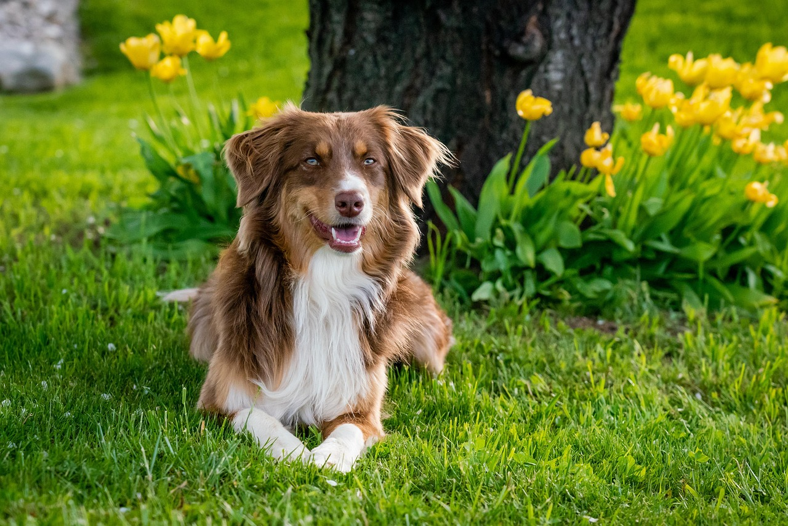
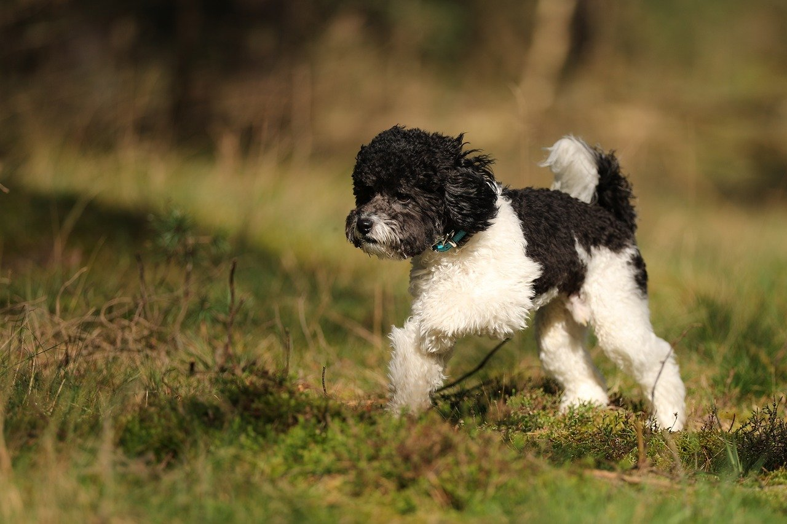

ANIMALS
I love all kinds of animals eg:horses, dogs, rabbits, parrots and many more. But the one I love the most are dogs.
A SIMPLE WEBPAGE ON DOGS
Dogs are clever, smart and playful animals with ken scent of smell. Dogs are domestic mammal of the family Carnivoras. It is a subspecies of the gray wolf and is related to foxes and jackals. The dog is one of the two most ubiquitous and most popular domestic animals in the world (the cat is the other). For more than 12,000 years it has lived with humans as a hunting companions, protectors, object of scorn or adoration, and friend.Dogs are regarded differently in different parts of the world. Dogs exhibit characteristics like loyalty, friendship, protectiveness and playfulness. These qualities and affection have earned dogs an important position in Western society, and in the United States and Europe the care and feeding of dogs has become a multibillion-dollar business. Western civilization has given the relationship between human and dog great importance, but, in some of the developing nations and in many areas of Asia, dogs are not held in the same esteem. In some areas of the world, dogs are used as guards or beasts of burden or even for food, whereas in the United States and Europe dogs are protected and admired. In ancient Egypt during the days of the pharaohs, dogs were considered to be sacred.
TYPES OF DOGS
There are many types of dogs. Some of the popular ones are: German Shepherd, Rottweiler, Golden Retriever, Labrador Retriever, Beagle, Bulldog, Poodle, Yorkshire Terrier, Boxer, Dachshund and many more. Each type of dog has its own characteristics and temperament. Some dogs are good for families with children, while others are better suited for single individuals or couples. It is important to choose a dog that matches your lifestyle and personality.

German Shepherd, also known in Britain as an Alsatian, is a German breed of working dog of medium to large size. The breed was developed by Max von Stephanitz using various traditional German herding dogs from 1899. It was originally bred as a herding dog, for herding sheep. It has since been used in many other types of work, including disability assistance, search-and-rescue, police work, and warfare. It is commonly kept as a companion dog, and according to the Fédération Cynologique Internationale had the second-highest number of annual registrations in 2013. The German Shepherd is the second-most registered breed by the American Kennel Club,and also the best friend of Police and and other forces.

The Poodle is a formal dog breed that comes in three sizesThe Poodle, called the Pudel in German and the Caniche in French, is a breed of water dog. The breed is divided into four varieties based on size, the Standard Poodle, Medium Poodle, Miniature Poodle and Toy Poodle, although the Medium Poodle is not universally recognised. They have a distinctive thick, curly coat that comes in many colours and patterns, with only solid colours recognised by major breed registries. Poodles are active and intelligent, and are particularly able to learn from humans. Poodles tend to live 10–18 years, with smaller varieties tending to live longer than larger ones.
HOW TO PET A DOG
Petting a dog is a great way to bond with your furry friend and show them some love. Here are some tips on how to pet a dog:
- Approach the dog calmly and slowly, allowing them to sniff you first.
- Start by petting the dog on their chest or shoulders, avoiding the head and face at first.
- Use gentle strokes and avoid rough or aggressive petting.
- Pay attention to the dog's body language and stop petting if they seem uncomfortable or agitated.
- Reward the dog with treats or praise for good behavior during petting sessions.

HOW TO TAKE CARE OF DOGS
Taking care of a dog requires time, effort, and dedication. Here are some tips on how to take care of your furry friend:
- Provide a balanced diet with high-quality dog food and fresh water.
- Regular exercise is important for a dog's physical and mental health. Take your dog for daily walks and playtime.
- Regular grooming is essential to keep your dog's coat clean and healthy. Brush their fur regularly and bathe them as needed.
- Schedule regular vet check-ups to ensure your dog is healthy and up-to-date on vaccinations.
- Provide plenty of love, attention, and socialization to keep your dog happy and well-adjusted.